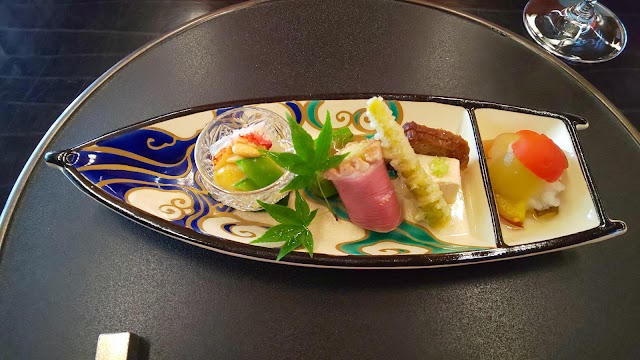
| 営業時間 | 月・火・水・木・金・土 12:00〜15:30, 18:00〜22:00 |
|---|---|
| 定休日 | 日曜 |
| 住所 | 大阪府吹田市千里山西２丁目５−１８ |
| 予約 | 可 — ☎ 06-6386-2234 ／ 公式サイト |
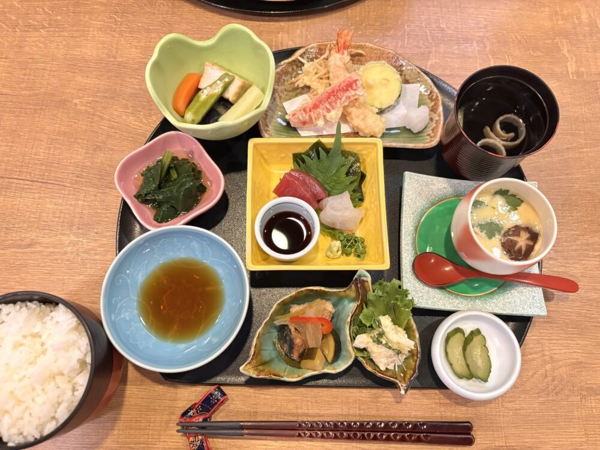
| 営業時間 | 月・火 11:30〜14:00 ／ 木・金・土・日 11:30〜14:00, 18:00〜22:00 |
|---|---|
| 定休日 | 水曜 |
| 住所 | 大阪府吹田市高野台１丁目６−１１ |
| 予約 | 可 — ☎ 06-6831-0370 ／ 公式サイト |
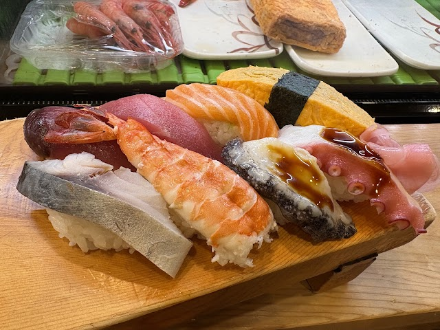
| 営業時間 | 月・火・水・金・土・日 11:30〜14:00, 17:00〜22:00 |
|---|---|
| 定休日 | 木曜 |
| 住所 | 大阪府吹田市内本町２丁目１−１０ |
| 予約 | 可 — ☎ 06-6382-1151 ／ 公式サイト |
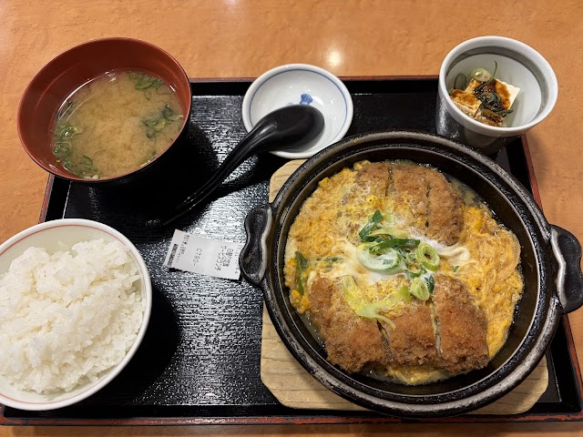
| 営業時間 | 月・火・水・木・金・土・日 8:00〜0:30 |
|---|---|
| 定休日 | なし(要最終確認) |
| 住所 | 大阪府吹田市江坂町１丁目２２−２３ １Ｆ |
| 予約 | 要確認 — ☎ 06-6339-8071 ／ 公式サイト |
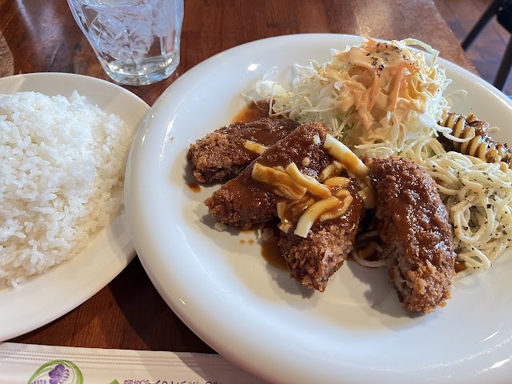
| 営業時間 | 月・火・水・木・金・土・日 10:00〜18:30 |
|---|---|
| 定休日 | なし(要最終確認) |
| 住所 | 大阪府吹田市千里山東１丁目９−１６ |
| 予約 | 可 — ☎ 06-6386-9036 |
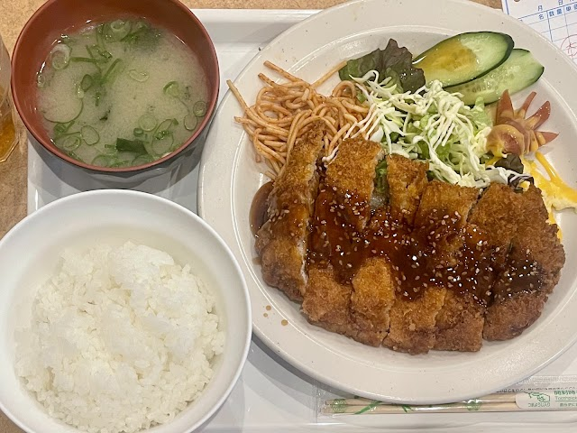
| 営業時間 | 月・火・水・木・金 11:00〜14:30, 18:00〜21:30 |
|---|---|
| 定休日 | 土・日曜 |
| 住所 | 大阪府吹田市泉町１丁目１２−３ |
| 予約 | 要確認 — ☎ 06-7161-8402 |
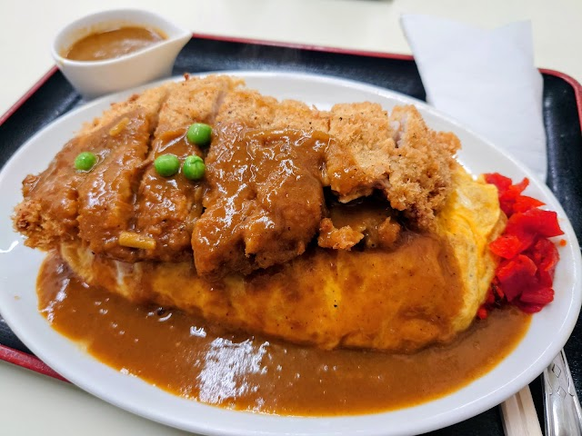
| 営業時間 | 火・水・木・金 11:00〜15:00, 17:30〜19:00 ／ 土 11:00〜15:00 |
|---|---|
| 定休日 | 月・日曜 |
| 住所 | 大阪府吹田市岸部南３丁目２１−１０ |
| 予約 | 要確認 — ☎ 06-6381-1405 |
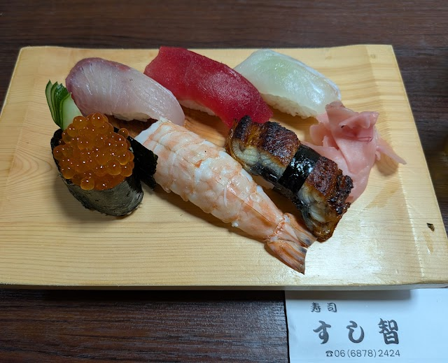
| 営業時間 | 月・火・木・金・土・日 11:30〜14:00, 17:00〜23:00 |
|---|---|
| 定休日 | 水曜 |
| 住所 | 大阪府吹田市樫切山１８−８ 第2清涼マンション 1F |
| 予約 | 可 — ☎ 050-5484-8696 ／ 公式サイト |
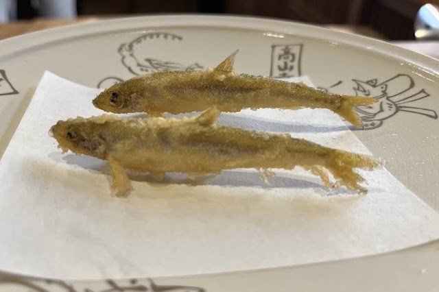
| 営業時間 | 月 18:00〜21:30 ／ 火・水・木・金・土 12:00〜14:30, 18:00〜21:30 |
|---|---|
| 定休日 | 日曜 |
| 住所 | 大阪府吹田市豊津町４１−４ |
| 予約 | 可 — ☎ 06-6338-2288 ／ 公式サイト |
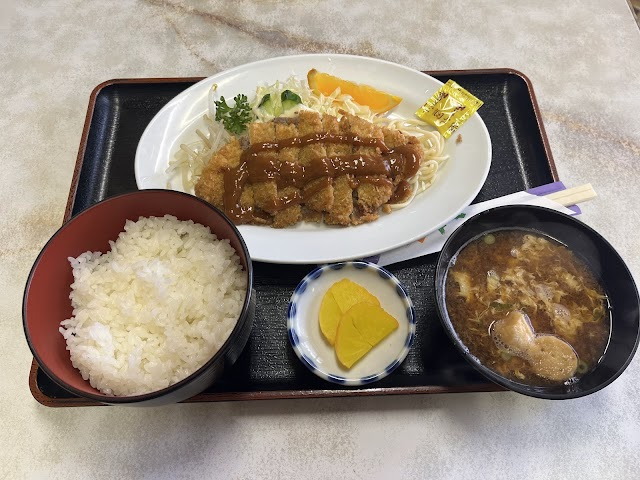
| 営業時間 | 月・火・水・木・金・土 11:00〜13:30, 17:00〜18:30 |
|---|---|
| 定休日 | 日曜 |
| 住所 | 大阪府吹田市天道町１５−６ |
| 予約 | 要確認 — ☎ 06-6388-2987 |
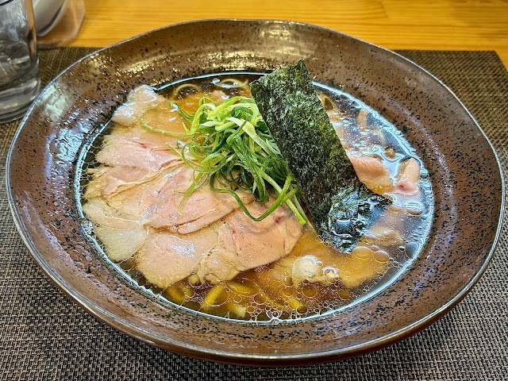
| 営業時間 | 月・木・金・土・日 11:30〜15:00, 17:00〜21:00 |
|---|---|
| 定休日 | 火・水曜 |
| 住所 | 大阪府吹田市朝日町５−２４ |
| 予約 | 要確認 — 公式サイト |
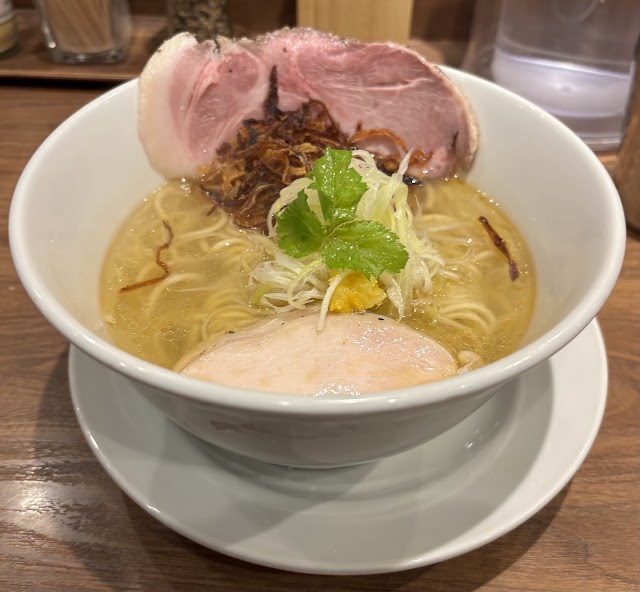
| 営業時間 | 月・火・水・木・金・土・日 11:00〜15:00, 17:30〜22:00 |
|---|---|
| 定休日 | なし(要最終確認) |
| 住所 | 大阪府吹田市江坂町１丁目２０−３０ キャロル江坂 1F 103号室 |
| 予約 | 要確認 — ☎ 06-6339-0815 ／ 公式サイト |
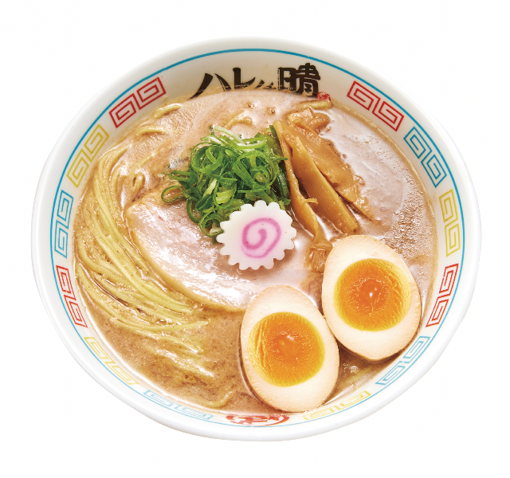
| 営業時間 | 月・火・水・木・金・土・日 11:00〜21:30 |
|---|---|
| 定休日 | なし(要最終確認) |
| 住所 | 大阪府吹田市片山町２丁目４−１ |
| 予約 | 可 — ☎ 06-6192-7970 ／ 公式サイト |
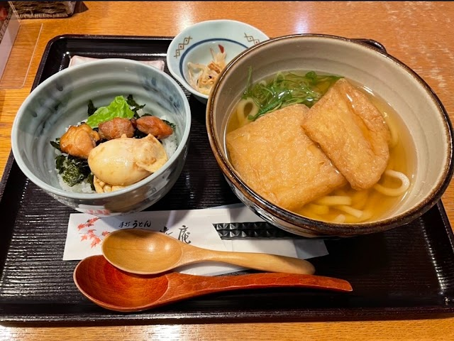
| 営業時間 | 月・火・水・金 11:30〜14:00, 17:30〜20:20 ／ 木 11:30〜14:00 ／ 土 11:30〜14:00, 17:30〜20:00 |
|---|---|
| 定休日 | 日曜 |
| 住所 | 大阪府吹田市垂水町３丁目１８−７ チサンマンション第6江坂 |
| 予約 | 要確認 — ☎ 06-6380-1099 ／ 公式サイト |
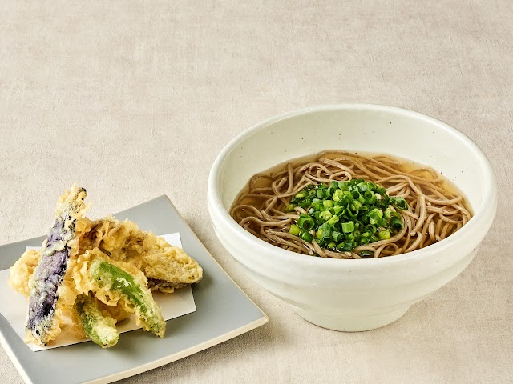
| 営業時間 | 月・火・水・木・金・土・日 10:00〜17:00 |
|---|---|
| 定休日 | なし(要最終確認) |
| 住所 | 大阪府吹田市千里山東２丁目２７−１４ 阪急千里山駅前ウェルビーイングテラス 1階 |
| 予約 | 要確認 — ☎ 06-4860-6786 |
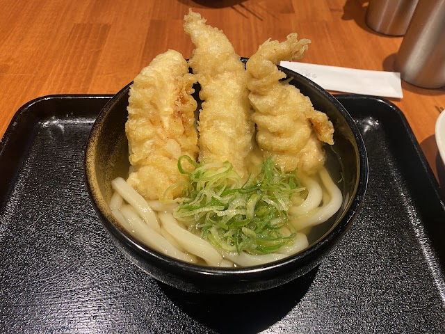
| 営業時間 | 月・火・木・金・土・日 11:30〜15:00, 17:30〜21:00 ／ 水 11:30〜14:00 |
|---|---|
| 定休日 | なし(要最終確認) |
| 住所 | 大阪府吹田市豊津町１７−１９ 江坂グリーンハイム 1F |
| 予約 | 可 — ☎ 06-6836-7712 ／ 公式サイト |
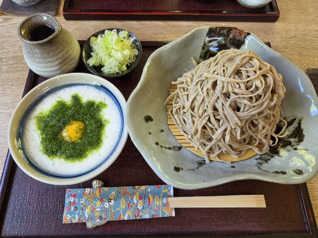
| 営業時間 | 金・土・日 11:30〜15:00 |
|---|---|
| 定休日 | 月・火・水・木曜 |
| 住所 | 大阪府吹田市高野台２丁目６−７−１ |
| 予約 | 可 — ☎ 06-7500-6593 ／ 公式サイト |
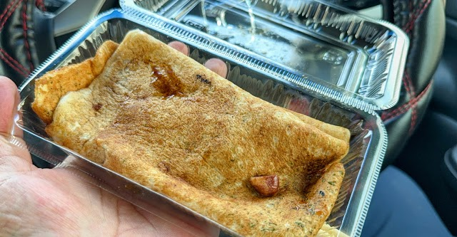
| 営業時間 | 月・火・金・土・日 10:30〜17:00 |
|---|---|
| 定休日 | 水・木曜 |
| 住所 | 大阪府吹田市元町１２−９ |
| 予約 | 要確認 — ☎ 06-6381-9545 ／ 公式サイト |
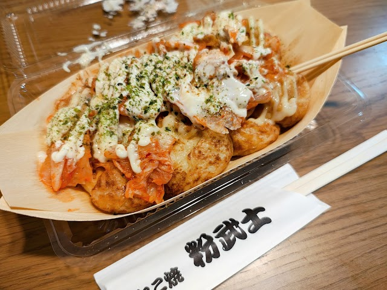
| 営業時間 | 火・水・木・金・土・日 11:00〜20:00 |
|---|---|
| 定休日 | 月曜 |
| 住所 | 大阪府吹田市内本町２丁目１−１ |
| 予約 | 可 — ☎ 06-6317-1766 ／ 公式サイト |
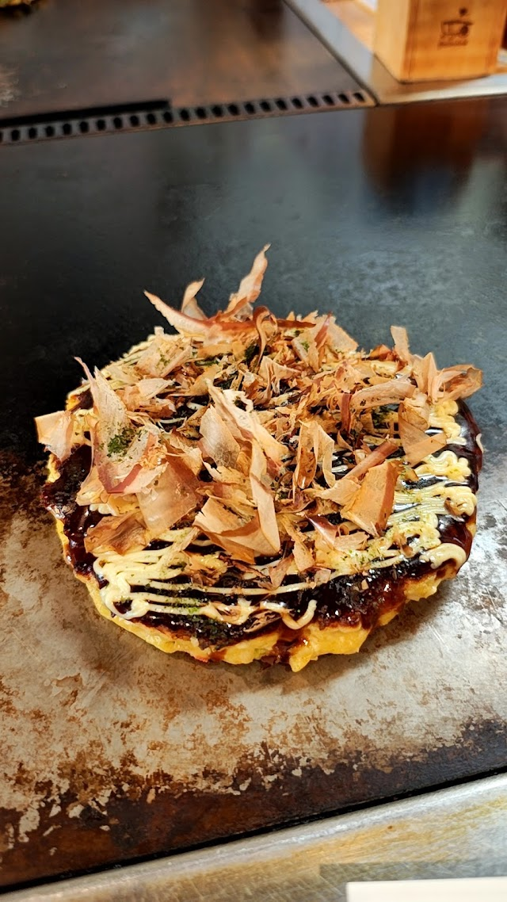
| 営業時間 | 月・木・金・土・日 11:30〜14:00, 17:00〜21:00 |
|---|---|
| 定休日 | 火・水曜 |
| 住所 | 大阪府吹田市内本町３丁目２４−１７ 新和ビル |
| 予約 | 可 — ☎ 06-6381-3777 |
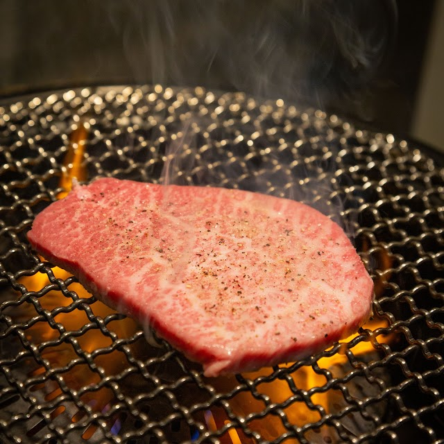
| 営業時間 | 火・水・木・金・土・日 17:00〜23:00 |
|---|---|
| 定休日 | 月曜 |
| 住所 | 大阪府吹田市江の木町３−１１ 第3ロンジェビル 1F |
| 予約 | 可 — ☎ 06-6339-2299 ／ 公式サイト |
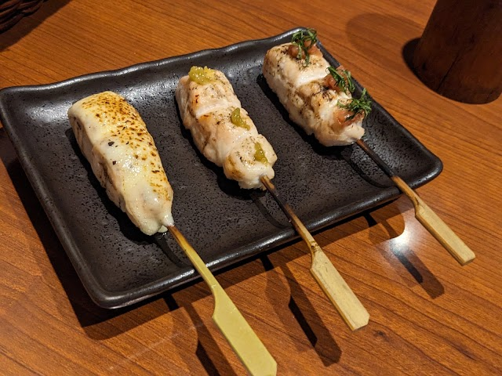
| 営業時間 | 月・火・水・木・金・土・日 17:00〜0:00 |
|---|---|
| 定休日 | なし(要最終確認) |
| 住所 | 大阪府吹田市朝日町１３−２８ |
| 予約 | 可 — ☎ 06-6319-6378 |
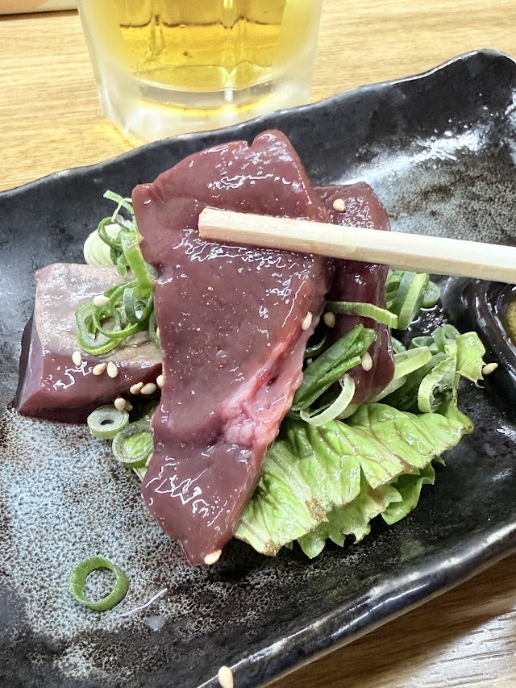
| 営業時間 | 月・火・水・木・金 12:00〜23:00 ／ 土・日 11:00〜23:00 |
|---|---|
| 定休日 | なし(要最終確認) |
| 住所 | 大阪府吹田市朝日町２−１２３ |
| 予約 | 要確認 |
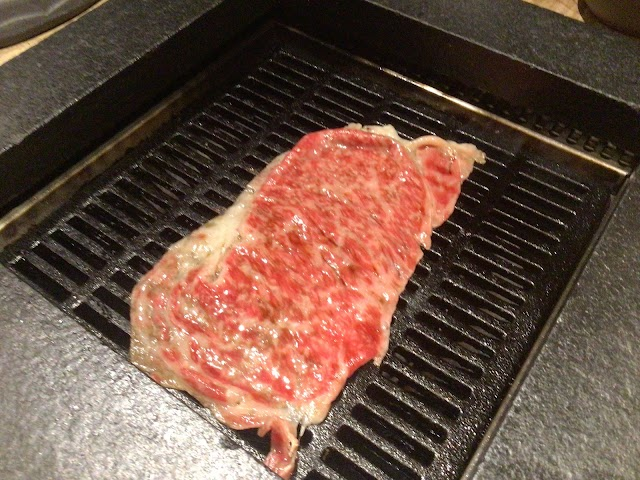
| 営業時間 | 月・火・水・木・金 17:00〜23:00 ／ 土・日 16:00〜23:00 |
|---|---|
| 定休日 | なし(要最終確認) |
| 住所 | 大阪府吹田市原町４丁目６−１６ |
| 予約 | 可 — ☎ 06-6330-1129 ／ 公式サイト |
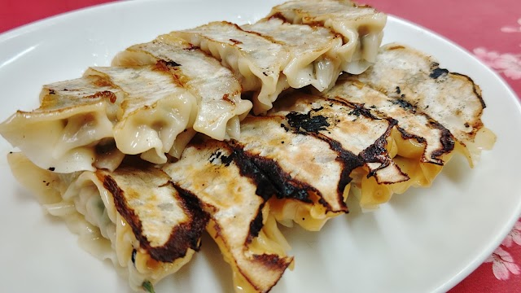
| 営業時間 | 月・火・水・金・土・日 11:00〜14:00, 17:00〜20:00 |
|---|---|
| 定休日 | 木曜 |
| 住所 | 大阪府吹田市朝日町１８−２ |
| 予約 | 可 — ☎ 06-6383-1155 |
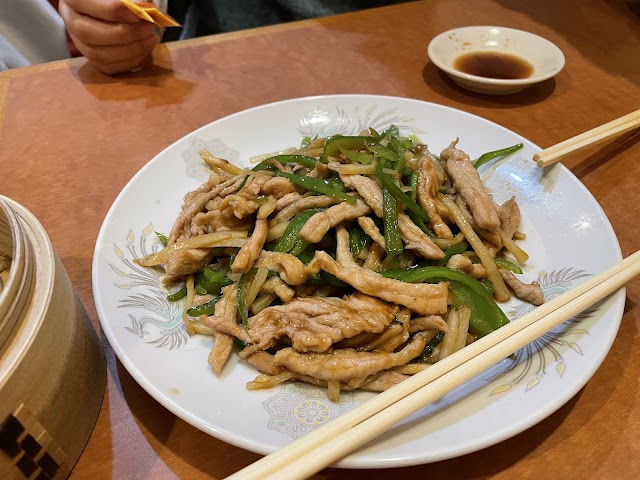
| 営業時間 | 月・水・木・金・土・日 11:00〜21:00 |
|---|---|
| 定休日 | 火曜 |
| 住所 | 大阪府吹田市津雲台１丁目１−３０ |
| 予約 | 可 — ☎ 06-6871-8624 ／ 公式サイト |
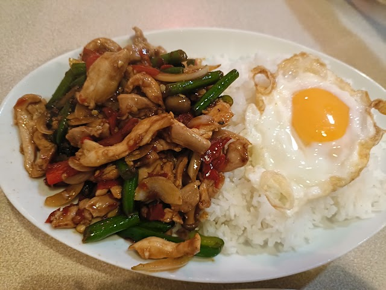
| 営業時間 | 月・水・木・金・土・日 11:30〜14:00, 17:30〜22:00 |
|---|---|
| 定休日 | 火曜 |
| 住所 | 大阪府吹田市江坂町２丁目６−１４ |
| 予約 | 可 — ☎ 06-6338-2317 ／ 公式サイト |
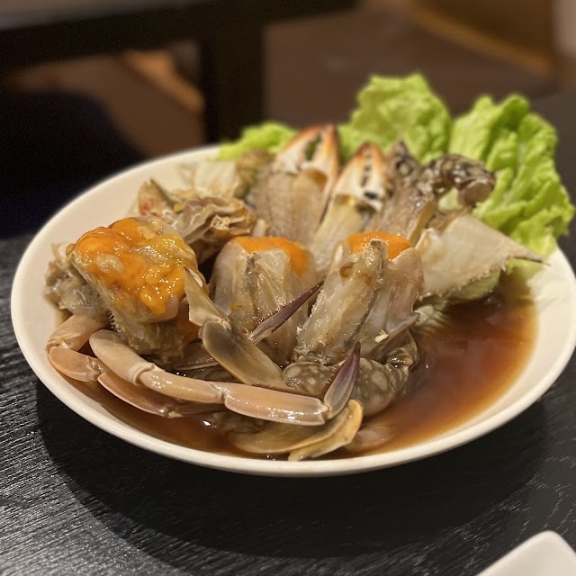
| 営業時間 | 火・水・木・金・土 16:00〜22:30 |
|---|---|
| 定休日 | 月・日曜 |
| 住所 | 大阪府吹田市江坂町１丁目４−１８ １F |
| 予約 | 可 — ☎ 06-6369-2157 ／ 公式サイト |
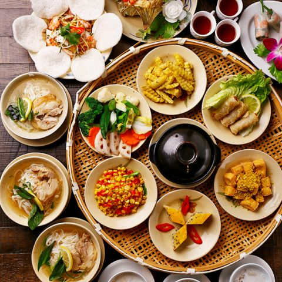
| 営業時間 | ランチ11:30〜14:30（LO14:00）／ディナー営業あり |
|---|---|
| 定休日 | 要確認 |
| 住所 | 大阪府吹田市江坂町1-13-46 楠元第一ビル1F |
| 予約 | 要確認 — 公式サイト |
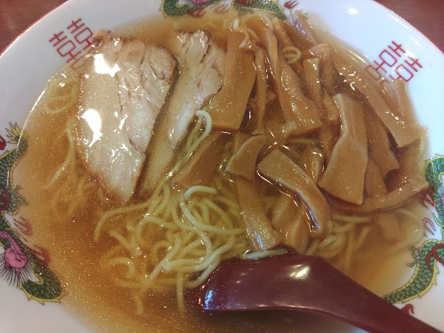
| 営業時間 | 月・火・水・金・土・日 11:00〜21:00 |
|---|---|
| 定休日 | 木曜 |
| 住所 | 大阪府吹田市古江台４丁目２ |
| 予約 | 可 — ☎ 06-6833-5920 |
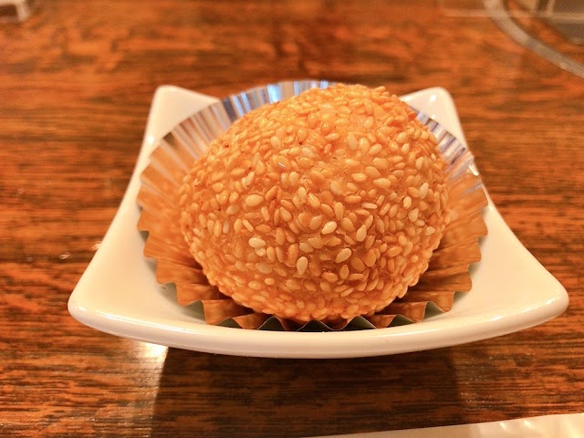
| 営業時間 | 水・木・金 11:30〜14:00, 17:30〜21:00 ／ 土・日 12:00〜14:00, 18:00〜21:00 |
|---|---|
| 定休日 | 月・火曜 |
| 住所 | 大阪府吹田市片山町２丁目１１−７０ |
| 予約 | 可 — ☎ 06-6380-1880 ／ 公式サイト |
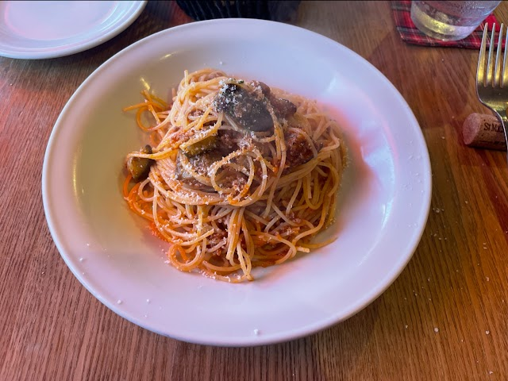
| 営業時間 | 月・水・木・金・土・日 11:30〜14:30, 17:30〜22:00 |
|---|---|
| 定休日 | 火曜 |
| 住所 | 大阪府吹田市豊津町１２−２６ 103 |
| 予約 | 可 — ☎ 06-6821-0735 ／ 公式サイト |
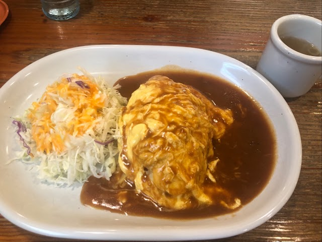
| 営業時間 | 月・火・木・金・土・日 7:45〜21:00 |
|---|---|
| 定休日 | 水曜 |
| 住所 | 大阪府吹田市江の木町２−２０ 豊友 |
| 予約 | 要確認 — ☎ 06-6386-4312 |
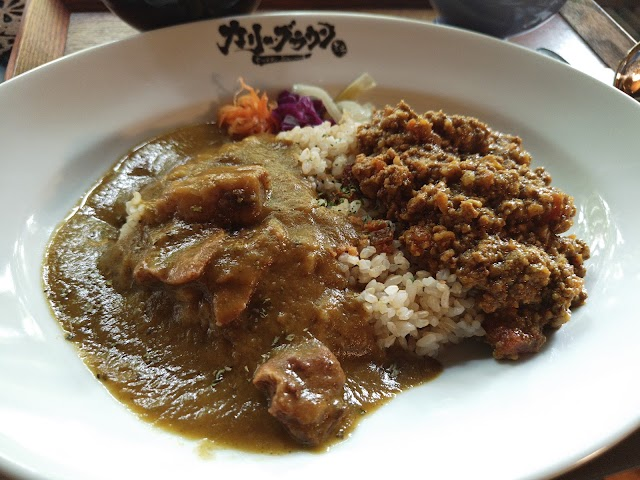
| 営業時間 | 火・水・木・金・土・日 11:00〜15:00 |
|---|---|
| 定休日 | 月曜 |
| 住所 | 大阪府吹田市豊津町２９−２０ |
| 予約 | 可 — ☎ 06-6318-5757 ／ 公式サイト |
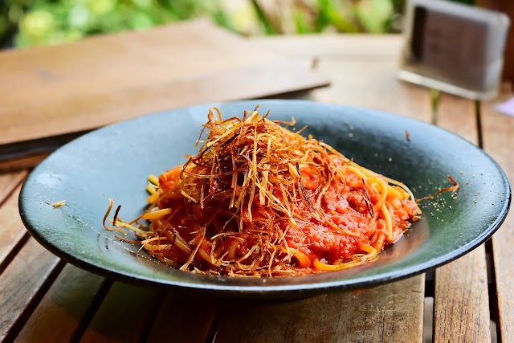
| 営業時間 | 月・火・水・木・金・土・日 11:00〜22:00 |
|---|---|
| 定休日 | なし(要最終確認) |
| 住所 | 大阪府吹田市津雲台１丁目３−５ 千里南公園内 |
| 予約 | 可 — ☎ 06-6832-4488 ／ 公式サイト |
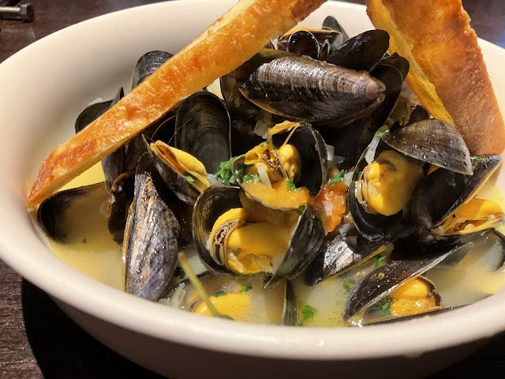
| 営業時間 | 月・火・水・木・金・土・日 12:00〜14:00, 18:00〜22:00 |
|---|---|
| 定休日 | なし(要最終確認) |
| 住所 | 大阪府吹田市豊津町１８−１ |
| 予約 | 可 — ☎ 06-6386-5583 ／ 公式サイト |
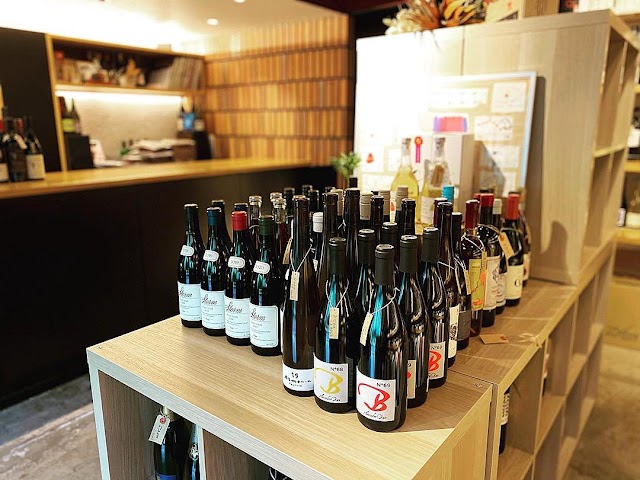
| 営業時間 | 月・水・木 12:00〜20:00 ／ 金 15:00〜22:00 ／ 土・日 11:00〜19:30 |
|---|---|
| 定休日 | 火曜 |
| 住所 | 大阪府吹田市津雲台６丁目２２−３ |
| 予約 | 要確認 — ☎ 06-6318-7438 ／ 公式サイト |
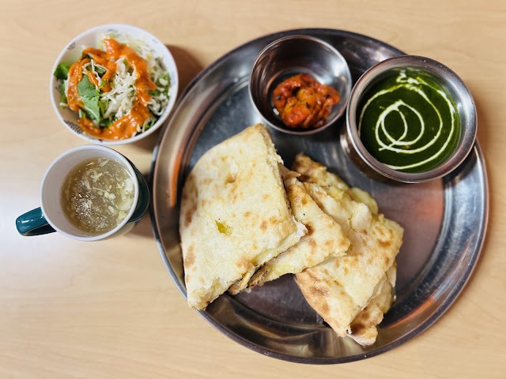
| 営業時間 | 火・水・木・金・土・日 11:00〜15:00, 17:00〜22:00 |
|---|---|
| 定休日 | 月曜 |
| 住所 | 大阪府吹田市泉町２丁目４７−２８ |
| 予約 | 可 — ☎ 06-6339-8325 |
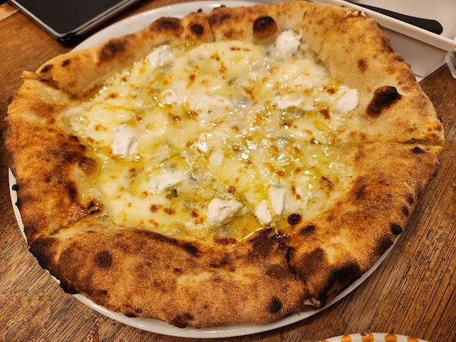
| 営業時間 | 火・水・木・金・土 11:30〜15:00, 18:00〜21:30 ／ 日 11:30〜15:00, 17:00〜21:30 |
|---|---|
| 定休日 | 月曜 |
| 住所 | 大阪府吹田市佐竹台２丁目５−１３ |
| 予約 | 可 — ☎ 06-6170-5887 ／ 公式サイト |
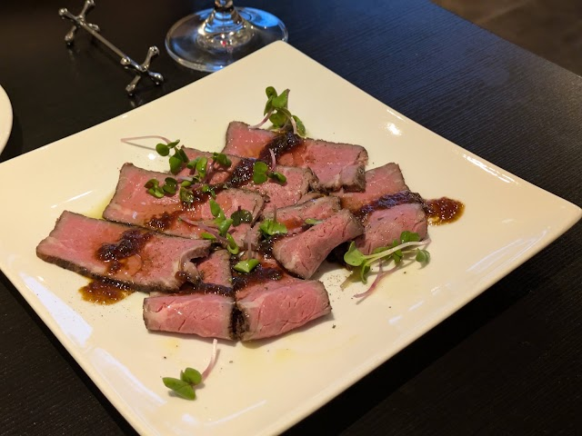
| 営業時間 | 火・日 11:30〜15:00 ／ 水・木・金・土 11:30〜15:00, 18:00〜22:00 |
|---|---|
| 定休日 | 月曜 |
| 住所 | 大阪府吹田市円山町６−３０ |
| 予約 | 可 — ☎ 06-4977-7161 ／ 公式サイト |
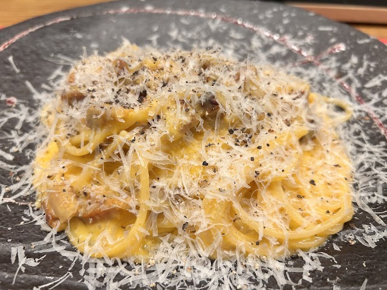
| 営業時間 | 月・火・水・金・土・日 11:30〜13:30, 17:30〜21:00 |
|---|---|
| 定休日 | 木曜 |
| 住所 | 大阪府吹田市長野東１４−５ |
| 予約 | 可 — ☎ 06-7220-6913 ／ 公式サイト |
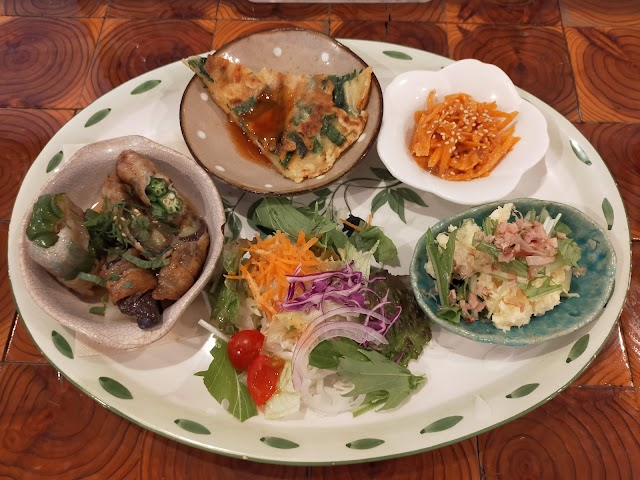
| 営業時間 | 火・水・木 11:30〜17:00 ／ 金・土 11:30〜18:00 |
|---|---|
| 定休日 | 月・日曜 |
| 住所 | 大阪府摂津市千里丘２丁目３−５ |
| 予約 | 可 — ☎ 06-6386-8755 ／ 公式サイト |
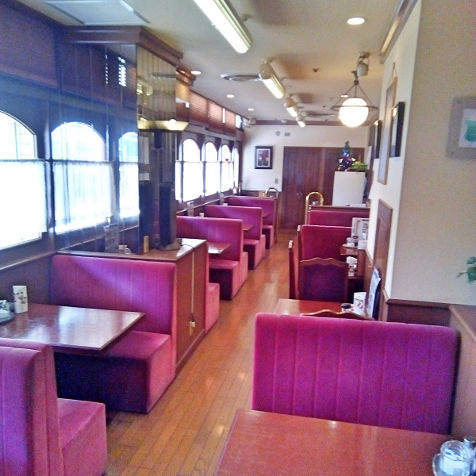
| 営業時間 | 月・火・水・木・金・土・日 10:00〜19:30 |
|---|---|
| 定休日 | なし(要最終確認) |
| 住所 | 大阪府吹田市朝日町２−１０１ イオン吹田店専門店街2F |
| 予約 | 要確認 — ☎ 06-6317-4130 |
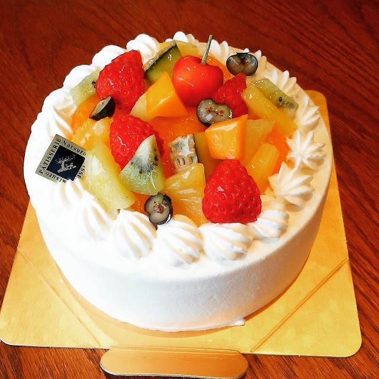
| 営業時間 | 月・火・水・木・金 10:00〜18:00 ／ 土・日 10:00〜18:30 |
|---|---|
| 定休日 | なし(要最終確認) |
| 住所 | 大阪府吹田市清水８−１２ ルミエール清水 1F |
| 予約 | 要確認 — ☎ 06-6876-6780 ／ 公式サイト |
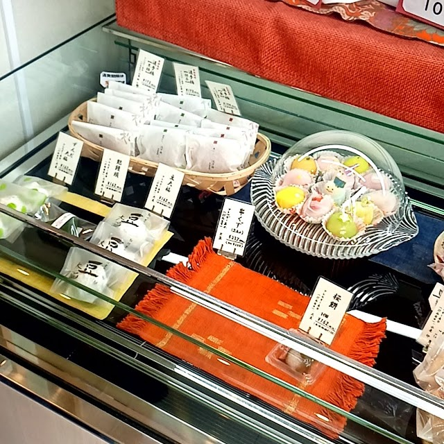
| 営業時間 | 月・火・木・金・土・日 10:00〜18:00 |
|---|---|
| 定休日 | 水曜 |
| 住所 | 大阪府吹田市山田東２丁目３６−２ |
| 予約 | 要確認 — ☎ 06-6877-1125 ／ 公式サイト |
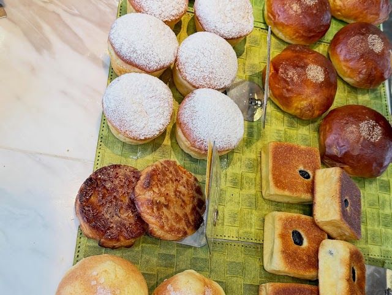
| 営業時間 | 水・木・金・土・日 9:00〜18:00 |
|---|---|
| 定休日 | 月・火曜 |
| 住所 | 大阪府吹田市千里万博公園１４−１３ BARONG 1F |
| 予約 | 要確認 — ☎ 06-6877-7070 ／ 公式サイト |
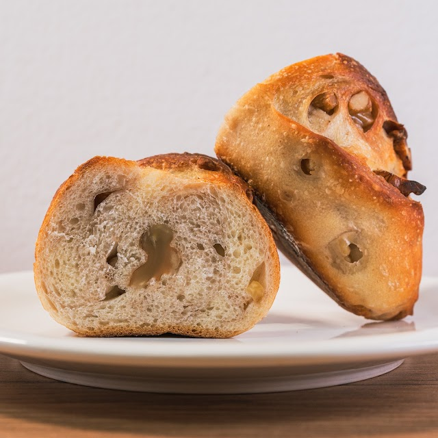
| 営業時間 | 水・木・金・土・日 11:00〜18:00 |
|---|---|
| 定休日 | 月・火曜 |
| 住所 | 大阪府吹田市岸部北５丁目２０−３ サンリッツ東千里 |
| 予約 | 要確認 — ☎ 06-6384-7901 ／ 公式サイト |
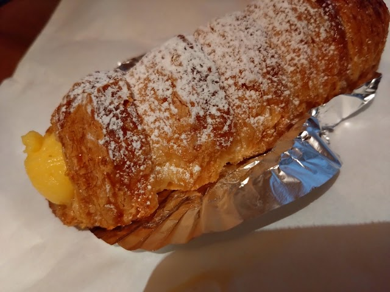
| 営業時間 | 火・水・木・土 9:00〜18:00 ／ 金 11:00〜18:00 |
|---|---|
| 定休日 | 月・日曜 |
| 住所 | 大阪府吹田市出口町３０−１６ |
| 予約 | 要確認 — ☎ 06-6330-8177 ／ 公式サイト |
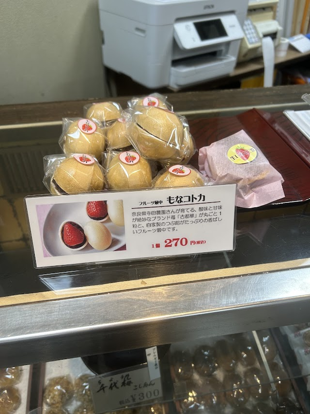
| 営業時間 | 月・火・水・金・土・日 8:00〜20:00 |
|---|---|
| 定休日 | 木曜 |
| 住所 | 大阪府吹田市昭和町１４−１６ |
| 予約 | 要確認 — ☎ 06-6381-5485 ／ 公式サイト |
本ガイドは個人利用目的で作成。掲載情報は2026年8月時点の調査に基づく。写真出典: Google Maps投稿写真(©各投稿者/Google)。